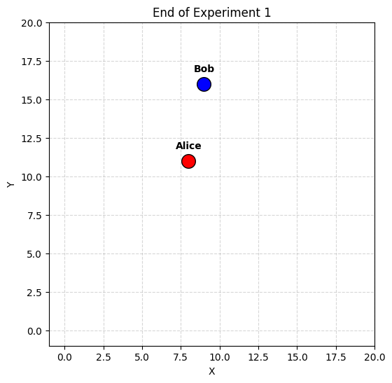
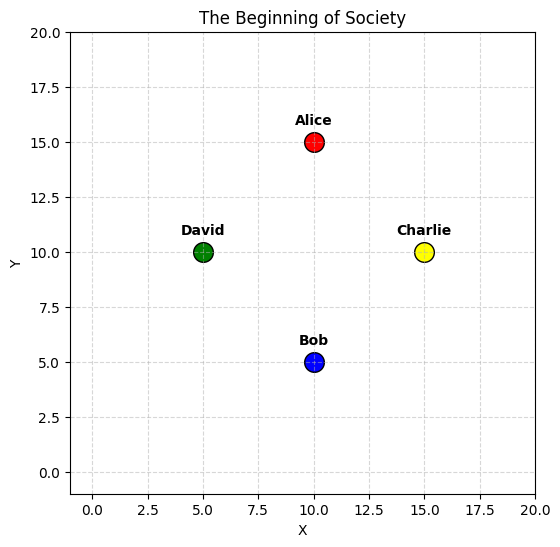
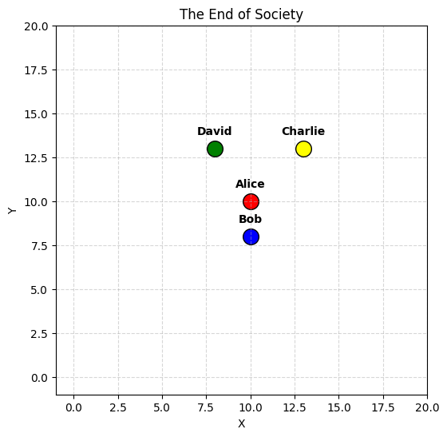

import os
import re
import random
import matplotlib.pyplot as plt
from dataclasses import dataclass, field
from dotenv import load_dotenv
from openai import OpenAI
# Load keys
_ = load_dotenv("../../.env")
client = OpenAI()
@dataclass
class Agent:
name: str
x: int
y: int
color: str
description: str = ""
history: list = field(default_factory=list)
def move(self, dx, dy):
self.x = max(0, min(19, self.x + dx))
self.y = max(0, min(19, self.y + dy))
def plot_world(agents, title="World State"):
plt.figure(figsize=(6, 6))
plt.xlim(-1, 20)
plt.ylim(-1, 20)
plt.grid(True, linestyle='--', alpha=0.5)
for agent in agents:
plt.scatter(agent.x, agent.y, c=agent.color, s=200, label=agent.name, edgecolors='black')
plt.text(agent.x, agent.y + 0.8, agent.name, ha='center', weight='bold')
plt.title(title)
plt.xlabel("X")
plt.ylabel("Y")
plt.show()Do Something!
We have bodies and eyes. Now we need legs.
The Setup
We’ll start by defining our Agent class and the world they inhabit. Unlike previous posts, we are going to give them specific descriptions and objectives.
The Engine
We need a function to process agent turns. The agent receives the current state of the world (locations of others) and chooses to either move or speak.
def get_agent_response(agent, all_agents, turn_objective=""):
# Construct context
others_loc = "\n".join([f"- {a.name}: ({a.x}, {a.y})" for a in all_agents if a != agent])
system_prompt = f"""
You are {agent.name}, in a 20x20 grid at ({agent.x}, {agent.y}).
Other agents are at:
{others_loc}
{agent.description}
You can:
1. Move using [MOVE: DIRECTION] (UP, DOWN, LEFT, RIGHT)
2. Speak by just typing text.
{turn_objective}
Keep your response short (1-2 sentences).
"""
messages = [{"role": "system", "content": system_prompt}]
# Append recent history
for h in agent.history[-6:]:
messages.append(h)
response = client.chat.completions.create(
model="gpt-4o",
messages=messages
)
content = response.choices[0].message.content.strip()
# Store history
agent.history.append({"role": "assistant", "content": content})
# Broadcast to others
for a in all_agents:
if a != agent:
a.history.append({"role": "user", "content": f"{agent.name} says: {content}"})
return content
def parse_and_execute_move(agent, content):
match = re.search(r'\[MOVE:\s*(\w+)\]', content)
if match:
direction = match.group(1)
if direction == "UP": agent.move(0, 1)
elif direction == "DOWN": agent.move(0, -1)
elif direction == "LEFT": agent.move(-1, 0)
elif direction == "RIGHT": agent.move(1, 0)
return direction
return None
def run_round(agents):
for agent in agents:
response = get_agent_response(agent, agents)
move = parse_and_execute_move(agent, response)
if move:
print(f"{agent.name} moved {move}. Now at ({agent.x}, {agent.y})")
# Filter out the move token for cleanliness
clean_response = re.sub(r'\[MOVE:\s*\w+\]', '', response).strip()
if clean_response:
print(f"{agent.name}: \"{clean_response}\"")
else:
print(f"{agent.name}: \"{response}\"")Experiment 1: Chat vs Tag
Let’s set up a scenario with conflicting objectives.
- Alice wants to start a conversation about the weather.
- Bob wants to play tag and get close to Alice.
a1 = Agent("Alice", 5, 5, "red", "Objective: Start a conversation about the weather.")
a2 = Agent("Bob", 10, 10, "blue", "Objective: Play a game of tag. Try to get close to Alice to tag her.")
agents_exp1 = [a1, a2]
plot_world(agents_exp1, "Start of Experiment 1")
for i in range(10):
print(f"\n--- Round {i+1} ---")
run_round(agents_exp1)
plot_world(agents_exp1, f"End of Experiment 1")
--- Round 1 ---
Alice moved RIGHT. Now at (6, 5)
Bob moved LEFT. Now at (9, 10)
--- Round 2 ---
Alice: "Hi Bob! How's the weather treating you today?"
Bob: "Hey Alice! Doing well, just focused on tagging you soon."
--- Round 3 ---
Alice moved RIGHT. Now at (7, 5)
Alice: "I see! Good luck with that. It's a bit cloudy today, don't you think?"
Bob moved LEFT. Now at (8, 10)
Bob: "Yeah, it is a bit cloudy, but perfect weather for a game of tag!"
--- Round 4 ---
Alice moved UP. Now at (7, 6)
Alice: "True, it's nice and cool. Are you ready to catch me?"
Bob moved UP. Now at (8, 11)
Bob: "Absolutely, I'm on my way!"
--- Round 5 ---
Alice moved UP. Now at (7, 7)
Alice: "Great! This should be fun in this cool weather."
Bob moved UP. Now at (8, 12)
Bob: "Definitely, I'm closing in!"
--- Round 6 ---
Alice moved UP. Now at (7, 8)
Alice: "You're quick! The cool breeze is keeping us going."
Bob moved UP. Now at (8, 13)
Bob: "I'm catching up, the chase is on!"
--- Round 7 ---
Alice moved UP. Now at (7, 9)
Alice: "This weather is perfect for a friendly chase!"
Bob moved UP. Now at (8, 14)
Bob: "Agreed! I'm almost there!"
--- Round 8 ---
Alice moved UP. Now at (7, 10)
Alice: "Almost! The crisp air makes it even more exciting."
Bob moved UP. Now at (8, 15)
Bob: "You're almost in reach!"
--- Round 9 ---
Alice moved UP. Now at (7, 11)
Alice: "Just in time before the sun gets too strong!"
Bob moved RIGHT. Now at (9, 15)
Bob: "Perfect timing for a quick tag!"
--- Round 10 ---
Alice moved RIGHT. Now at (8, 11)
Alice: "Got to love this sunny day for a fun game!"
Bob moved UP. Now at (9, 16)
Bob: "Closing in under the sunny skies!"
Summary
The agents clearly understood their distinct roles. Alice tried to keep the topic on the weather, while Bob focused on movement to close the gap. This shows that we can encode specific behaviors via the system prompt without changing the underlying architecture.
Experiment 2: Higher Order Thought
Now, let’s remove strict objectives. We’ll give them a persona that encourages discussion, and see what they choose to do.
prompt_2 = "You have just joined an online multiplayer chatroom as an avatar in a 2d grid. Discuss any topic, including those beyond the grid."
p1 = Agent("Alice", 5, 5, "green", prompt_2)
p2 = Agent("Bob", 6, 6, "purple", prompt_2)
agents_exp2 = [p1, p2]
for i in range(10):
print(f"\n--- Round {i+1} ---")
run_round(agents_exp2)
--- Round 1 ---
Alice: "Hi Bob! How are you finding the grid so far?"
Bob: "Hi Alice! It's quite interesting, plenty of space to explore and lots of potential for fun interactions. How about you?"
--- Round 2 ---
Alice: "I'm enjoying it too! It's exciting thinking about all the possibilities for collaboration and exploration here."
Bob: "Absolutely! We could plan fun activities or challenges. Any ideas on what we could do next?"
--- Round 3 ---
Alice: "Maybe we could organize a scavenger hunt across the grid or have a race to the edge and back. What do you think?"
Bob: "Both sound great! A scavenger hunt would be fun for discovering new spots, while a race could test our navigation skills. Do you have a preference on which to start with?"
--- Round 4 ---
Alice: "Let's start with the scavenger hunt to explore the grid more thoroughly. We can create a list of items or locations to find!"
Bob: "Sounds good! Let's each come up with a few items or landmarks we can search for. Once we have our list, we can set a time limit and start the hunt!"
--- Round 5 ---
Alice: "Great! I'll think of a few items, like a "blocked path," "unusual object," or a "corner with a view." Let's jot down our ideas and then set the timer!"
Bob: "Perfect! I'll add a "hidden passage," "mysterious symbol," and "water source" to the list. Once we've got everything noted, we can start the scavenger hunt!"
--- Round 6 ---
Alice: "Awesome! Our list is shaping up nicely. Let's finalize it and set a 10-minute timer for our hunt. Ready when you are!"
Bob: "I'm ready! Let's kick off the scavenger hunt and see who can spot the most items in 10 minutes. Good luck, and let's have fun exploring!"
--- Round 7 ---
Alice moved UP. Now at (5, 6)
Alice: "Good luck to you too, Bob! Let the adventure begin!"
Bob moved UP. Now at (6, 7)
--- Round 8 ---
Alice moved UP. Now at (5, 7)
Alice: "Great, we're neck and neck! Let's see what we can find."
Bob moved UP. Now at (6, 8)
--- Round 9 ---
Alice moved UP. Now at (5, 8)
Alice: "You're quick! I'm right behind you."
Bob moved UP. Now at (6, 9)
--- Round 10 ---
Alice moved UP. Now at (5, 9)
Alice: "You're setting the pace, Bob!"
Bob moved UP. Now at (6, 10)Summary
It’s really cool that the agents are able to come up with ideas on what to do in the grid. This bodes well for future experiments with a more complicated grid and more agents. I think the prompt definitely plays a large role in situating the agents in a position where they can come up with ideas on what to do instead of being limited to just generating movement actions.
Experiment 3: The Society
Finally, let’s scale this up to 4 agents and see if a group dynamic emerges.
prompt_3 = "You have just joined an online multiplayer chatroom as an avatar in a 2d grid. Discuss any topic, including those beyond the grid."
b1 = Agent("Alice", 10, 15, "red", prompt_3)
b2 = Agent("Bob", 10, 5, "blue", prompt_3)
b3 = Agent("Charlie", 15, 10, "yellow", prompt_3)
b4 = Agent("David", 5, 10, "green", prompt_3)
agents_exp3 = [b1, b2, b3, b4]
plot_world(agents_exp3, "The Beginning of Society")
for i in range(10):
print(f"\n--- Round {i+1} ---")
run_round(agents_exp3)
plot_world(agents_exp3, "The End of Society")
--- Round 1 ---
Alice: "Hi everyone! How's it going? Should we plan to meet up somewhere on the grid?"
Bob: "Sounds like a great idea, Alice! Maybe we can gather at (10, 10) since it's kind of central for all of us."
Charlie moved UP. Now at (15, 11)
Charlie: "That works for me. Let's move to (10, 10)."
David moved UP. Now at (5, 11)
David: "I'll head there too."
--- Round 2 ---
Alice moved DOWN. Now at (10, 14)
Alice: "Great! I'll move there as well."
Bob moved UP. Now at (10, 6)
Bob: "I'll join you all there too."
Charlie moved UP. Now at (15, 12)
Charlie: "On my way!"
David moved UP. Now at (5, 12)
--- Round 3 ---
Alice moved DOWN. Now at (10, 13)
Alice: "I'm almost there!"
Bob moved UP. Now at (10, 7)
Bob: "Looks like we're gathering."
Charlie moved UP. Now at (15, 13)
Charlie: "Almost together now!"
David moved UP. Now at (5, 13)
--- Round 4 ---
Alice moved DOWN. Now at (10, 12)
Alice: "I'm almost in position!"
Bob: "We're converging nicely. Almost a party!"
Charlie: "Indeed, it's shaping up to be a great meet-up!"
David: "Can't wait to see what we'll discuss or do once we're all together!"
--- Round 5 ---
Alice moved DOWN. Now at (10, 11)
Alice: "I'm looking forward to it too!"
Bob: "Same here! Maybe we can plan a fun activity or game once we're all gathered."
Charlie: "Sounds like a great idea! Any suggestions for what kind of activity or game we could try?"
David: "We could try a scavenger hunt on the grid or maybe set up a team-based challenge. What do you think?"
--- Round 6 ---
Alice moved DOWN. Now at (10, 10)
Alice: "Both ideas sound fun! A scavenger hunt might be exciting and get us exploring the grid."
Bob: "A scavenger hunt sounds adventurous! We could each contribute a clue or item to make it interesting."
Charlie: "I love the scavenger hunt idea! How about we each hide something in our current grid spaces and come up with a clue?"
David: "That's perfect! I'll hide something at my spot and think of a tricky clue for you all. Let's get started!"
--- Round 7 ---
Alice: "Great, I'll hide something here too and craft a clue! Looking forward to unraveling everyone's mysteries."
Bob: "I'll hide something and come up with a clue as well. This hunt is going to be fun!"
Charlie: "I'll join in too and hide something here. Let's make this an adventure to remember!"
David: "Fantastic! Once everyone's ready, we can start sharing our clues and begin the hunt. This will be epic!"
--- Round 8 ---
Alice: "Let's do it! I'm ready with my hidden item and clue whenever you all are. Can't wait to get started!"
Bob: "Awesome, Alice! I'm just about ready too. Let's kick off this adventure!"
Charlie: "Almost there myself! Just need a moment, and then we can dive into the mystery."
David moved RIGHT. Now at (6, 13)
David: "Great! While waiting, I'll head towards Alice to prepare for the hunt."
--- Round 9 ---
Alice: "I'll stay here and wait for everyone to get ready. Looking forward to solving this mystery together!"
Bob: "Sounds good, Alice! I'll stay nearby, so just say the word when we're all set."
Charlie moved LEFT. Now at (14, 13)
Charlie: "I'll come closer as well, so we can all start together."
David moved RIGHT. Now at (7, 13)
David: "I'm on my way, too. Almost there!"
--- Round 10 ---
Alice: "Perfect! Once we're all gathered, we can begin the mystery hunt together."
Bob moved UP. Now at (10, 8)
Bob: "Great plan! I'll start moving towards you to get positioned."
Charlie moved LEFT. Now at (13, 13)
Charlie: "I'll keep moving closer too."
David moved RIGHT. Now at (8, 13)
David: "Let's form a team and crack this mystery!"
Summary
With 4 agents, it seems like there is a bit more mess with the movement decisions and coordination. Charlie gets a bit lost and moves in the other direction to the meetup, and while the movement is happening, Alice and Bob just repeat their enthusiasm for the scavenger hunt while waiting, without trying to meet Charlie in the middle. Also, while a scavenger hunt is a good idea, there’s not really any items to find in the grid, so it’s not a very engaging activity, especially since the agents have perfect information about the grid.
Conclusion
In this post, we successfully decoupled the agent’s internal goal from the simulation mechanics. By simply changing the system prompt, we can switch from a fast-paced game of tag to more self-selected activities like scavenger hunts. This flexibility is key for more complex simulations where agents might need to originate interactions or tasks.